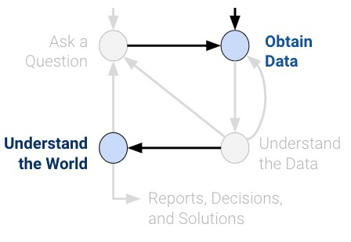
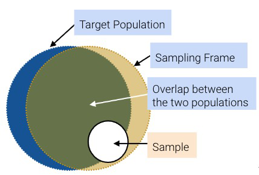
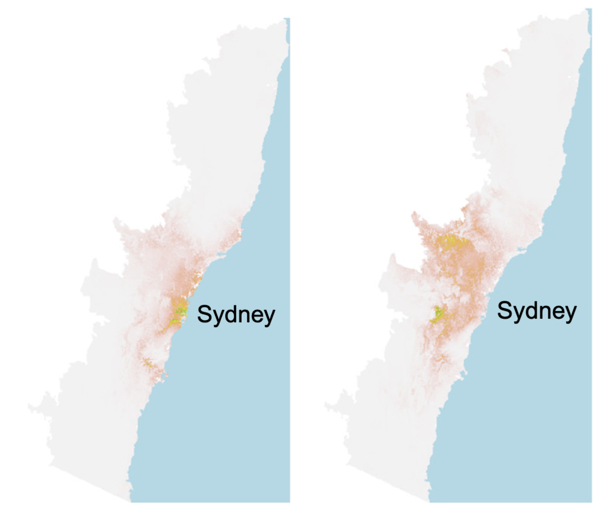
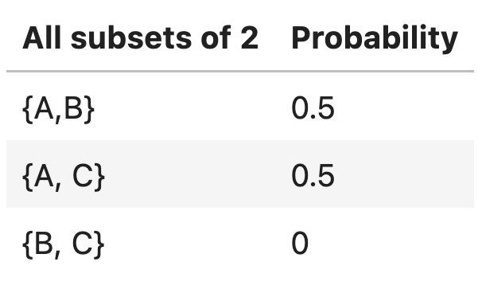

import numpy as np
np.random.multinomial(100, [0.60, 0.30, 0.10])array([57, 31, 12])In Data Science, understanding characteristics of a population starts with having quality data to investigate. While it is often impossible to collect all the data describing a population, we can overcome this by properly sampling from the population. In this note, we will discuss appropriate techniques for sampling from populations.

In general: a census is “an official count or survey of a population, typically recording various details of individuals.”
The U.S. Decennial Census is perhaps the most well-known census. It was last held in April 2020, and it counts every person—not just citizens—living in all 50 states, DC, and US territories. The census is mandated by the U.S. Constitution. The U.S. census affects the allocation of federal funds, congressional representation, and drawing congressional and state legislative districts. The census is composed of a survey mailed to different housing addresses in the United States.
A survey is a set of questions. An example is workers sampling individuals and households. What is asked, and how it is asked, can affect how the respondent answers, or even whether the respondent answers in the first place.
While censuses are great, it is often difficult and expensive to survey everyone in a population. Thus, we usually survey a subset of the population instead.
A sample is often used to make inferences about the population. That being said, how the sample is drawn will affect the reliability of such inferences. Two common source of error in sampling are chance error, where random samples can vary from what is expected, in any direction; and bias, which is a a systematic error in one direction.
It is also worth noting that individuals in a population are not always people. Other populations include: bacteria in people’s gut (we can sample them using DNA sequencing); trees of a certain species; small businesses receiving a microloan; or published results in an academic journal / field.
Because of how surveys and samples are drawn, it turns out that samples are usually—but not always—a subset of the population:
While ideally these three sets would be exactly the same, in practice they usually aren’t. For example, there may be individuals in your sampling frame (and hence, your sample) that are not in your population. And generally, sample sizes are much smaller than population sizes.

The following case study is adapted from Statistics by Freedman, Pisani, and Purves, W.W. Norton NY, 1978.
In 1936, President Franklin D. Roosevelt (D) went up for re-election against Alf Landon (R). The election took place as the Great Depression entered its eighth year. Roosevelt was still working to push the provisions of his New Deal economic policy through Congress and the courts. However, the New Deal policies he had already enacted, such as Social Security and unemployment benefits, had proven to be highly popular with most Americans. Landon, a political moderate, accepted much of the New Deal but criticized it for waste and inefficiency.
As is usual, polls were conducted in the months leading up to the election to try and predict the outcome. The Literary Digest was a magazine that had successfully predicted the outcome of 5 general elections coming into 1936. In their polling for the 1936 election, they sent out their survey to 10 million individuals, who they found from phone books, lists of magazine subscribers, and lists of country club members. Of the roughly 2.4 million people who filled out the survey, only 43% reported they would vote for Roosevelt; thus the Digest predicted that Landon would win.
On election day, Roosevelt won in a landslide, winning 61% of the popular vote of about 45 million voters. How could the Digest have been so wrong with their polling?
It turns out that the Literary Digest sample was not representative of the population. Their sampling frame inherently skewed towards more affluent voters, who tended to vote Republican, and they completely overlooked the lion’s share of voters who were still suffering through the Great Depression. Furthermore, they had a dismal response rate (about 24%); who knows how the other non-respondents would have polled? The Digest folded just 18 months after this disaster.
At the same time, George Gallup, a rising statistician, also made predictions about the 1936 elections. His estimate (56% Roosevelt) was much closer despite having a smaller sample size of “only” 50,000 (This sample size, despite smaller than the Digest’s, is still more than necessary; more when we cover the Central Limit Theorem). Gallup went a step further to predict the Digest’s prediction within 1%, with a sample size of only 3000 people. He did so by anticipating the Digest’s affluent sampling frame and subsampled those individuals. The Gallup Poll today is one of the leading polls for election results.
So what’s the moral of the story? Samples, while convenient, are subject to chance error and bias. Election polling, in particular, can involve many sources of bias. To name a few:
When sampling, it is essential to focus on the quality of the sample rather than the quantity of the sample. A huge sample size does not fix a bad sampling method. Our main goal is to gather a sample that is representative of the population it came from. The most common way to accomplish this is by randomly sampling from the population.
Before looking at some examples of probability (or random) sampling schemes, let’s look at an example that seems random, but is actually not.
Scientists in New South Wales, Australia, collect specimens from eucalyptus trees to keep in museums, recording their locations in latitude/longitude. Since many scientists participated in this and their moving patterns vary, one might hope to use these locations to map the geographical distribution of eucalyptus trees. However, the result was not expected.

The plot on the left shows the spatial distribution of eucalyptus trees from the samples scientists collected: we can see many eucalyptus trees clustered around Sydney and the coast line. The plot on the right shows the actual spatial distribution (recovered by correcting bias). What went wrong?
It turns out that since most scientists live in Sydney (a city in New South Wales), the places they go to collect samples are clustered around Sydney and the coast line. This haphazard sampling scheme gives us a biased sample.
This kind of sample is called a convenience sample. It generally refers to whatever you can get ahold of. Haphazard sampling is not necessarily random sampling; there are many potential sources of bias.
Now, let’s look at probability samples, or random samples.
In a probability sample, we know the chance any given set of individuals will be in the sample. This does not imply that all individuals in the population must have the same chance of being selected. The following scheme is a valid probability sampling scheme:
Suppose I have a population of three individuals A, B, and C and I decide to sample 2 of them as follows:
The following table lists the probability that all subsets of 2 individuals and their probability of being the sample:

Though not a great one, this is a probability sample, since we know the chance of getting each subset.
Probability samples allow us to estimate the bias and chance error, which helps us quantify uncertainty (more in a future lecture). However, the real world is usually more complicated, since we don’t always see the full population and therefore cannot calculate the chances. For example, we do not generally know the probability that a given bacterium is in a microbiome sample, or whether people will answer when Gallup calls landlines. That being said, we try to model probability sampling where possible if the sampling or measurement process is not fully under our control.
A few common random sampling schemes:
The following is a very common situation in data science: - We have an enormous population. - We can only afford to sample a relatively small number of individuals. If the population is huge compared to the sample, then random sampling with and without replacement are pretty much the same.
Example : Suppose there are 10,000 people in a population. Exactly 7,500 of them like Snack 1; the other 2,500 like Snack 2. What is the probability that in a random sample of 20, all people like Snack 1?
As seen here, when the population size is large, probabilities of sampling with replacement are much easier to compute and lead to a reasonable approximation.
The approximation discussed above suggests the convenience of multinomial probabilities, which arise from sampling a categorical distribution at random **with replacement*.
Suppose that we have a bag of marbles with the following distribution: 60% are blue, 30% are green, and 10% are red. If we then proceed to draw 100 marbles from this bag, at random with replacement, then the resulting 100-size sample is modeled as a multinomial distribution using np.random.multinomial:
import numpy as np
np.random.multinomial(100, [0.60, 0.30, 0.10])array([57, 31, 12])This method allows us to generate, say, 10 samples of size 100 using the size parameter:
np.random.multinomial(100, [0.60, 0.30, 0.10], size=10)array([[59, 29, 12],
[58, 30, 12],
[53, 33, 14],
[58, 30, 12],
[57, 32, 11],
[60, 28, 12],
[62, 31, 7],
[61, 29, 10],
[57, 33, 10],
[70, 23, 7]])Understanding the sampling process is what lets us go from describing the data to understanding the world. Without knowing / assuming something about how the data were collected, there is no connection between the sample and the population. Ultimately, the dataset doesn’t tell us about the world behind the data.